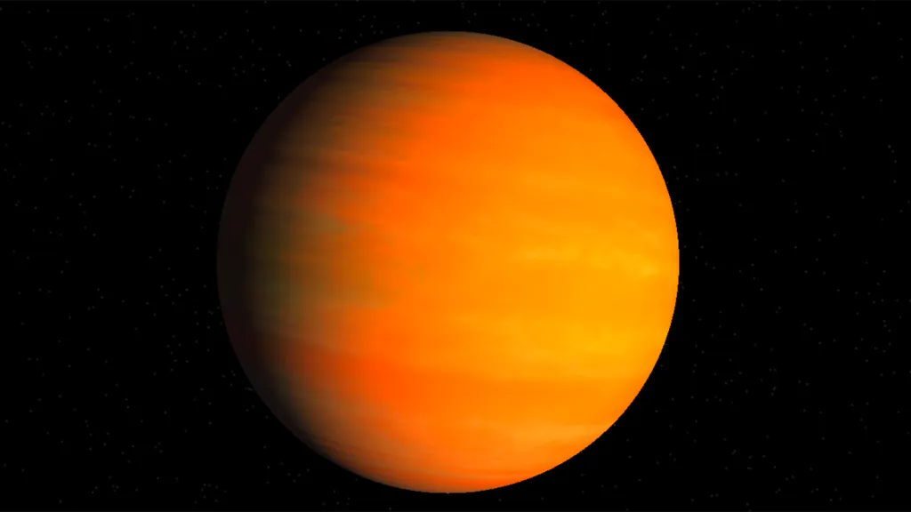
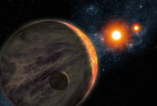
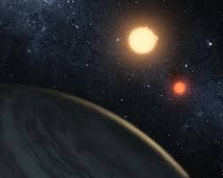

Kepler-16b
A Saturn-sized planet orbiting two stars, like Tatooine from Star Wars
Overview
Kepler-16b is an exoplanet that orbits two stars, making it a circumbinary planet. Discovered by NASA's Kepler mission, it is located about 200 light-years from Earth in the constellation Cygnus. Kepler-16b is similar in size to Saturn and has a cold, gaseous atmosphere.

Kepler-16b
Kepler-16b orbits two stars, creating a unique and dynamic environment.
Characteristics
Orbital Period
Kepler-16b completes an orbit around its two stars every 229 days.
Distance from Earth
Kepler-16b is approximately 200 light-years away from Earth.
Size and Mass
Kepler-16b is similar in size to Saturn and has a mass of about 0.333 times that of Jupiter.
Atmosphere
The planet has a cold, gaseous atmosphere composed mainly of hydrogen and helium.
Interesting Facts
- Kepler-16b is often compared to the fictional planet Tatooine from Star Wars due to its two suns.
- The discovery of Kepler-16b confirmed that planets can form and survive in the dynamic environment of a binary star system.
- Kepler-16b's orbit is nearly circular, which is unusual for a circumbinary planet.
- The planet's surface temperature is estimated to be around -100 to -70 degrees Celsius.
Gallery


